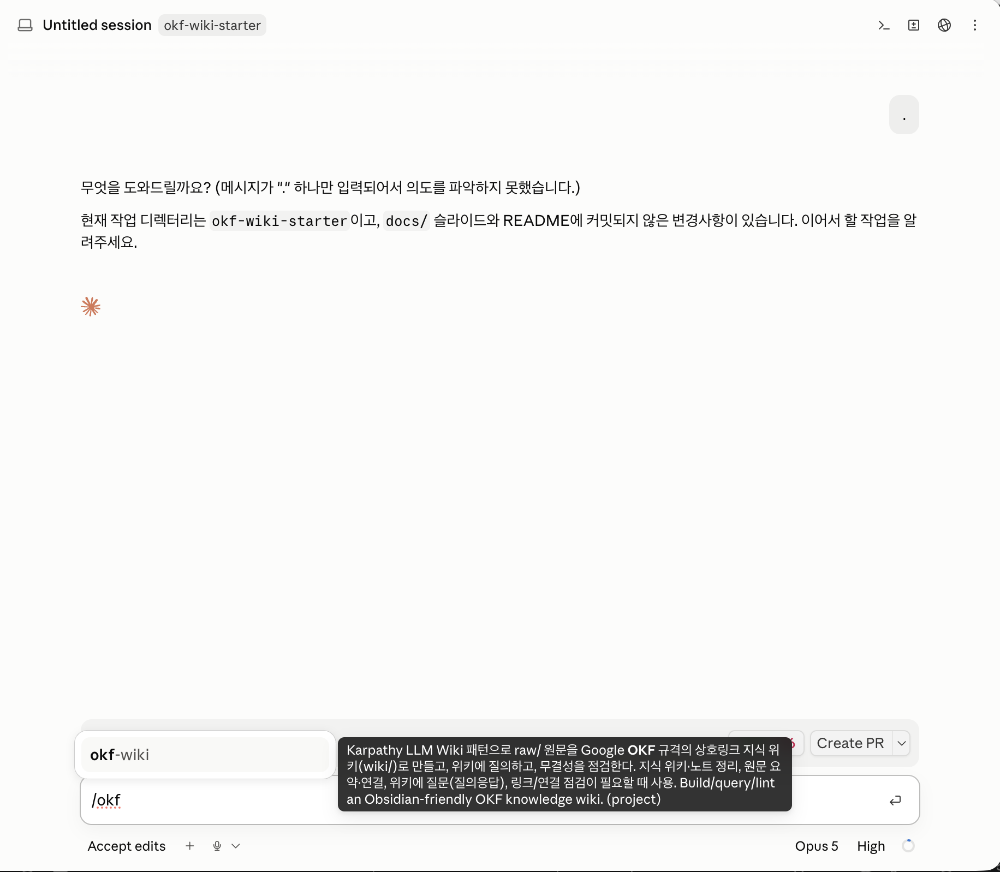

1단계
Claude 데스크톱 앱 설치하고 로그인


- 운영체제에 맞는 설치 파일을 내려받습니다
맥은 dmg, 윈도우는 exe. 용량이 큽니다.
- 설치 후 배포받은 계정으로 로그인합니다
- 가운데 위의 Code 탭을 누릅니다
파일을 직접 다루는 것은 Code 탭뿐입니다.
요금제를 올리라는 안내가 나오면 계정이 잘못된 것입니다. 손을 들어 주세요.
2단계
실습 폴더 내려받기


스킬, 예제 자료 두 개, 점검 도구가 들어 있습니다. 직접 만들 것은 없습니다.
- 저장소 주소로 들어갑니다
- 초록색 Code 버튼 → Download ZIP
파일 하나가 내려받아집니다.
- 찾기 쉬운 곳에 압축을 풉니다
바탕화면이나 문서 폴더에 풉니다. 폴더 이름은 my-wiki 로 바꿔 둡니다.
폴더 안에 raw/ 와 wiki/ 가 있습니다. raw에는 예제 두 개, wiki는 비어 있습니다.
저장소파일 묶음을 인터넷에 올려 두고 여럿이 같이 쓰는 공간. GitHub이 그중 가장 널리 쓰이는 서비스입니다. repository, repo
ZIP여러 파일을 하나로 압축한 파일. 내려받은 뒤 압축을 풀면 원래 폴더 모양으로 돌아옵니다.
3단계
Code 탭에서 그 폴더를 엽니다


4단계
Obsidian 설치하고 같은 폴더 열기


연 다음 왼쪽의 그래프 아이콘을 눌러 그래프 뷰를 켭니다. 지금 비어 있는 것이 정상입니다.
보관함Obsidian이 관리할 폴더 하나를 가리키는 말. 특별한 형식이 아니라 그냥 평범한 폴더입니다. vault
5단계 · 가장 놓치기 쉬운 곳
웹 클리퍼 설치하고 저장 위치 지정


확장 프로그램브라우저에 기능을 덧붙이는 작은 프로그램. 설치하면 주소창 옆에 아이콘이 하나 생깁니다. extension